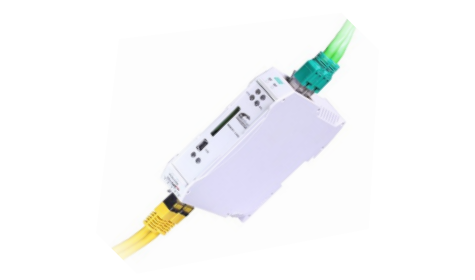
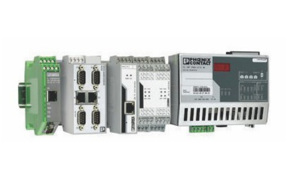
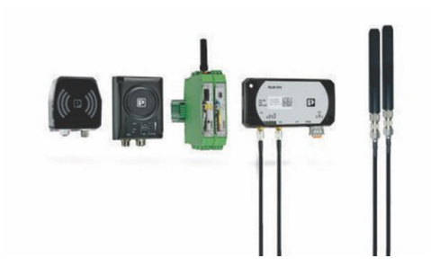

netTAP 50
For Fieldbus to Serial or Ethernet conversions
Short I/O data conversion time lower than 20 msec
Extremely space-saving compact design
Loadable firmwares for flexible use of many conversions
netTAP 100
For Fieldbus to Fieldbus, to Serial or Ethernet Conversions
Combines Master and Slave in any variations
Loadable Firmware for flexible use of other conversions
Device replacement in seconds via memory card based loadings
netTAP 151
Bridging between two Real-Time Ethernet networks
Flexible choice of operating modes Slave/Master or Slave/Slave
Effortless integration as standard I/O device
Secure network segregation via internal data buffer
Fast conversion time less than 10 millisecond

netLink - MPI / netTAP-MPI
Parallel communication to 32 PLC's with upto 16 TCP connections
Direct PLC to PLC Communication, also as projected connection
For all S7 Engineering Tools inclusive TIA Portal
Web Based configuration, Protocol supports of RFC1006 and DHCP
Full access to profibus diagnostics and services in STEP7®
Automatic DP/MPI baud rate detection
Gateways For Process Automation
Modbus/RTU, RAW, and ASCII to Modbus/TCP and
Modbus to EtherNet/IP™
From HART to HART-IP, Modbus/TCP, and PROFINET
From HART to OPC UA for NAMUR Open Architecture (NOA)
PROFIBUS PA
Serial HART
Ethernet HART
Foundation FieldBus

FO Media Convertor
FO to Ethernate
FO to Profibus up to 12 Mbps
FO to DeviceNet™,
FO to RS-232 / 422/ 485 bus systems
FO to CAN, CANopen® up to 800 kbps
Profibus / Profinet Connector
Profibus Various cable outlets of 35 , 90 ,and 180
Profibus Connector Connection Technology: IDC, Screw, Spring-Cage and M12 90 long, S7-compatible
PROFIBUS DP up to 12 Mbps
PROFINET with RJ45 connectors
PROFINET with M12 Male Female connectors

Industrial Wireles
NearFi: For contactless power and real-time Ethernet data transmission in the near-field range
WLAN IEEE 802.11: Wireless Ethernet for highperformance and industrial-grade Ethernet networks
Bluetooth: Wireless Ethernet and Wireless I/O for transmitting control data in factory automation
Trusted Wireless: Wireless I/O and Wireless Serial for signal and data transmission in large systems
LoRaWAN: Low Power Wide Area Network for energyefficient data transmission over long distances